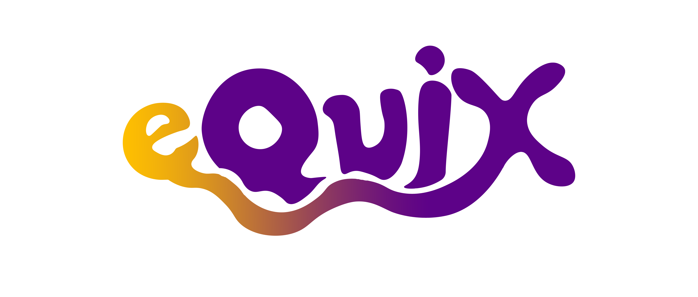
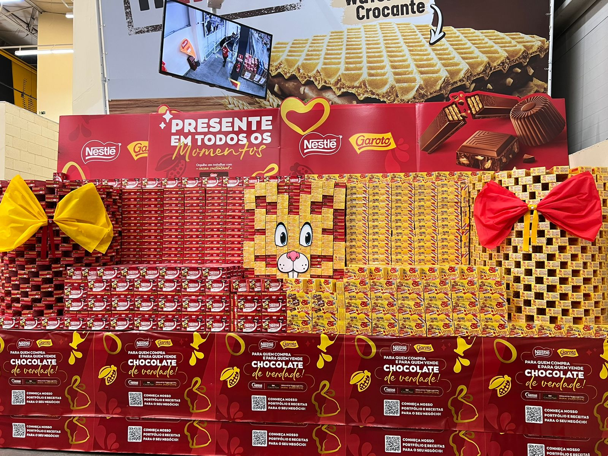
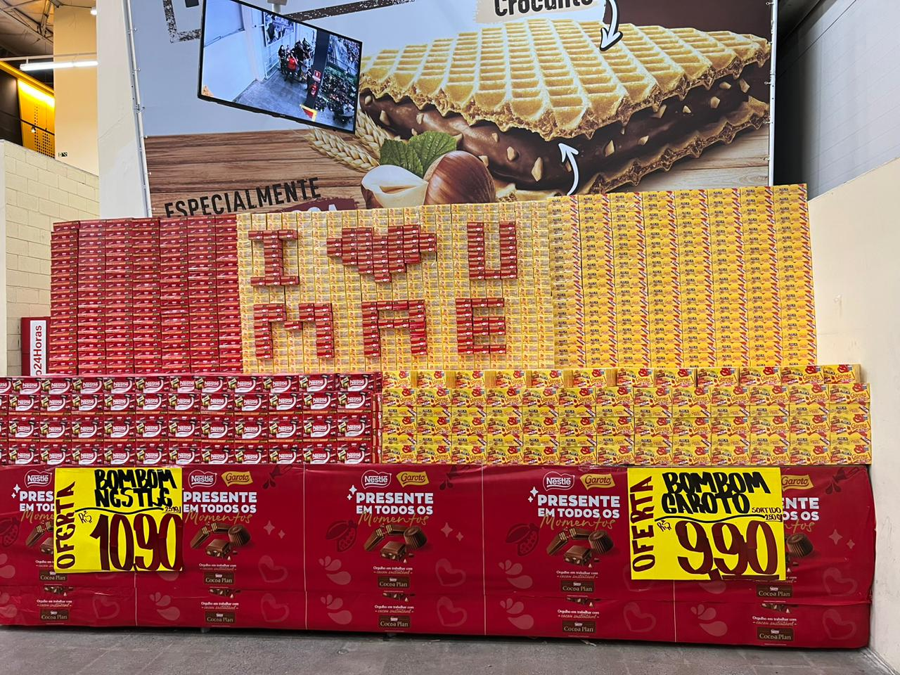
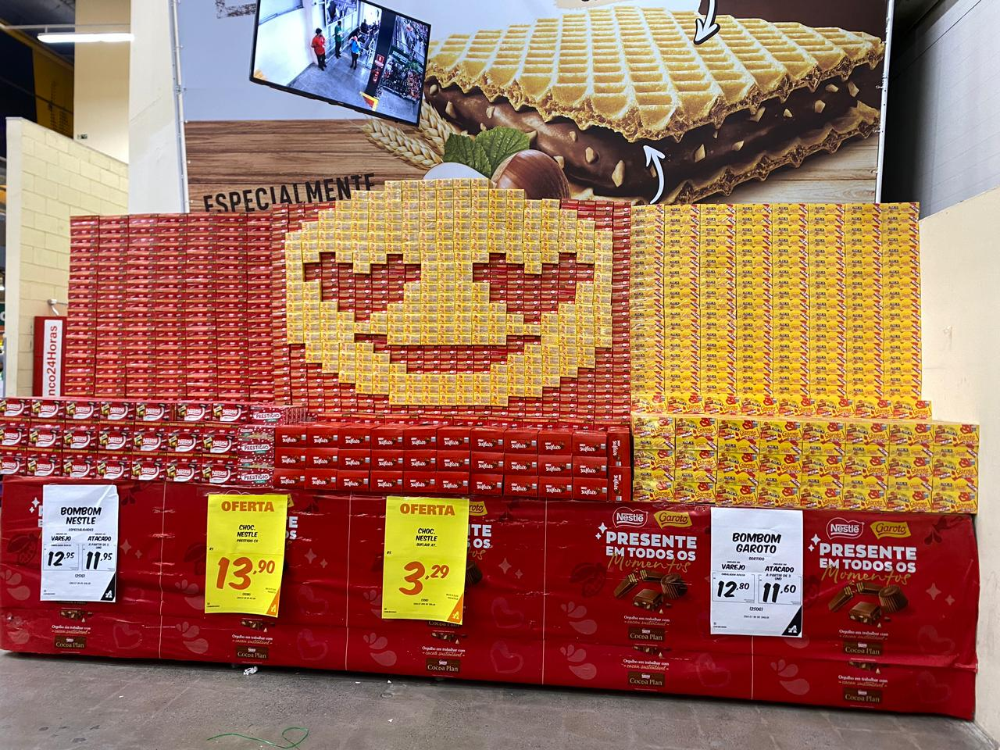

Sobre mim
Tenho 24 anos, sou bastante
tranquilo, criativo e proativo.
Gosto de passar mais tempo com
a minha família, ouvindo música
ou apenas jogando.
Ao lado vou deixar as 3 musicas/jogos que
mais gosto no momento.
Músicas


Games


Formação
Eu estou no último semestre de Análise e Desenvolvimento de Sistema na Cruzeiro do Sul.
Desde pequeno tive a oportunidade de ter um computador e a tecnologia tem me acompanhado desde dos meus 6 anos até atualmente.
A área de TI não foi a minha primeira escolha, tinha sido Recursos Humanos, porém não me identifiquei com o curso e tranquei no primeiro semestre. Um ano depois, me inscrevi em ADS e me encontrei na área.
Eu estou no último semestre de Análise e Desenvolvimento de Sistema na Cruzeiro do Sul.
Desde pequeno tive a oportunidade de ter um computador e a tecnologia tem me acompanhado desde dos meus 6 anos até atualmente.
A área de TI não foi a minha primeira escolha, tinha sido Recursos Humanos, porém não me identifiquei com o curso e tranquei no primeiro semestre. Um ano depois, me inscrevi em ADS e me encontrei na área.
O que faço?
Trabalho na Nestlé há 4 anos e atuo como Merchandiser, também conhecido como "Promotor de Vendas". É o profissional que cuida das mercadorias, preços, layouts e execuções da empresa dentro de um cliente.


